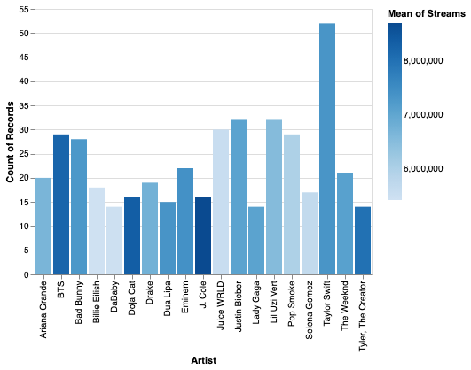

Introduction to Altair¶
Original source¶
Original material: University of Washington Visualization Curriculum. I thank the authors for making this material available not just to use, but to edit via their GitHub source code.
Samples¶
Here are some examples of the types of charts that can be produced using Altair. You can see the source code for these in the First two examples notebook.
(Source code) Adding a tooltip, so that when the mouse is over a point, more information is displayed:
(Source code) A bar chart, with artist names along the \(x\)-axis: 
(Source code) An interactive chart, where only the points in the selected region have color:

Where to read more¶
The syntax for Altair can be intimidating the first time you see it (and the fifth time you see it).
alt.Chart(spotify_df).mark_circle().encode(
x = "Energy",
y = "Loudness",
color = alt.Color('Energy', scale=alt.Scale(scheme='turbo')),
tooltip = ["Song Name", "Artist"],
)
There are endless possibilities for customization. Here are some places to read about options, but we recommend that you instead begin going through the First two examples notebook, and return to these links when there is something specific you want to customize.
Options for what to draw: Marks
Different “channels”, like
color,opacity, andsize. You can see a list of channels here: Documentation.Here is a list of color schemes: Vega color schemes and an example of how to use a color scheme in Altair.
Sometimes it helps to explicitly tell Altair what type of data it is: encoding types
I often find browsing examples easier than reading documentation. If you’re the same way, check out the Altair example gallery.